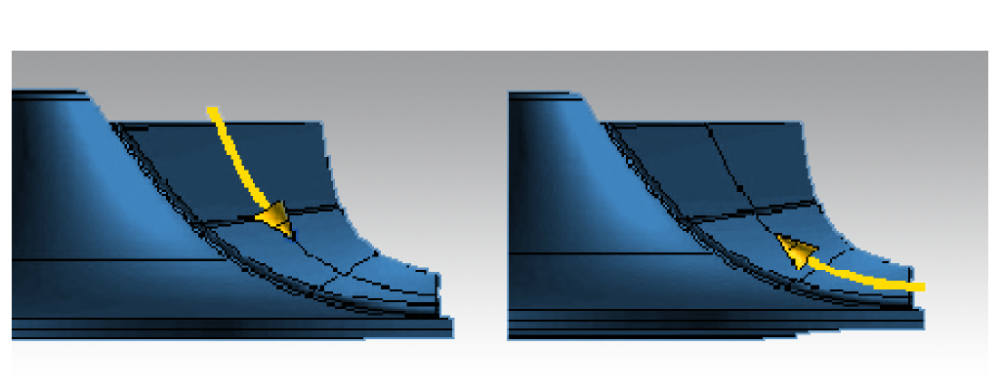

5 axes
Inclination strategy
4X Machining: Depending on the blade geometry, it may be possible to calculate a fixed tilt for the second rotary axis. Access is then solely achieved by rotating about the Z axis.
As of Version 2011, the 4-axis machining strategy in the MB Roughing and MB Hub Finishing cycles is no longer limited to 90 degrees for the 5th axis. You may use any decimal value between 0 and 90 for the tilt angle.
Note
Advantage: Higher feedrates can be achieved thanks to the faster interpolation. This drastically reduces machining times.
Avoidance strategy
Around Z: This option activates the previously used behavior, where the collision avoidance is mainly implemented by pivoting around the Z-axis.
Note
Advantage: Very simple movement of the tool that can lead to constant speed of the rotary axes.
Camberline: This option activates a new strategy for collision avoidance that is mainly implemented perpendicular to the camberline (centerline) of the blade.
Note
Advantage: Tools can be used that are more able to utilize the small spaces between the blades. Result: higher process parameters and reduced machining times!
Flank mode
If the blade surfaces are suitable, regular surfaces will be derived from the blade geometry. These will be machined with the tool orientation of the Flank milling cycle to achieve an equal allowance of the blades during roughing.
The resulting constant cutting conditions may eliminate the need for pre-finishing and reduce the machining time.
Machining in the Flank mode can be defined either as Complete machining or only for the last (close to the blade) path.
Note
The Flank mode is also available for 4X machining. The swarf cutting orientation is applied only to the last path close to the blade in order to remove the remaining residual stock.
Lead angle up / Lead angle down
The lead angles are defined relative to the vertical positioning of the milling tool on the path. Positive values cause a drawing cut (the tool tip points away from path direction).
|  |
Negative values cause a plunging cut (the tool tip points in the direction of the movement). The value of the lead angle can be defined separately for upward and downward movements.
Global: Global values are defaults that should be achieved across the entire machining area.
Local lead angles
If you want to maintain locally defined lead angles for the main blade’s leading edge, the splitter blade’s leading edge and the trailing edges, you can enable these defaults manually.
In the environment of the selected position, the system interpolates between the local and global lead angle.
The collision avoidance can automatically change global and local angles.
Smooth factor: The smooth factor can be used to limit the length/smoothing of the transition between the global and local tool axis settings. This makes it possible to control the area of the drill or upward cuts for both cutting directions independently of each other.
Not activated: Global smoothing between the setup at all positions that are shown in the UI. The global value is applied at positions without manually specified local value.
Enabled: Changes the lead angle from the global to the local value and back within a length of factor * tool radius. With a small factor, the transition between the specified lead angles can be relatively hard. A larger factor makes the transitions smoother, but can lead to longer drill or upward cuts.
Frame angle limitation
Max. angle to Z: The frame angle limitation prevents the system from calculating a tool orientation that the machine cannot carry out.